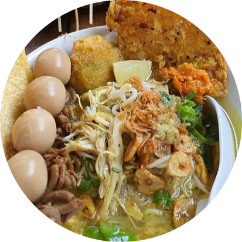

Soto Kudus
Soto Kudus adalah masakan yang berasal dari Kudus, Jawa Tengah. Soto kudus berisi suwiran ayam dan taoge atau dapat juga menggunakan daging kerbau dan memiliki kuah yang bening.
Bahan-Bahan
1 ekor ayam kampung, potong dua
2 cm lengkuas, memarkan
2 lembar daun salam
2 batang serai, memarkan
1 sdm garam
4 sdm kecap manis
Haluskan:
8 butir bawang merah
4 siung bawang putih
½ sdt merica butiran
2 sdt garam
Pelengkap:
200 g tauge, bersihkan
6 batang kucai, iris halus
2 batang daun bawang, iris halus
2 batang seledri, iris halus
3 sdm bawang putih goreng
3 sdm bawang merah goreng
3 butir jeruk nipis
Lauk Pelengkap:
Perkedel kentang
Telur pindang
Sate kerang
Sate telur puyuh
Cara Membuat
1. Potong ayam menjadi 4 bagian;
2. Didihkan air secukupnya, masukkan ayam bersama lengkuas, salam, serai, dan bumbu halus;
3. Rebus dengan api kecil hingga ayam lunak;
4. Angkat ayam, tiriskan ayam hingga kering;
5. Didihkan kembali kaldu dengan api kecil. Tambahkan kecap. Masak hingga mendidih lalu angkat;
6. Goreng dalam minyak panas dan banyak hingga agak kering. Angkat, suwir-suwir dagingnya.
Penyajian: Taruh tauge, suwiran ayam, dan pelengkap lainnya dalam mangkuk saji. Siram dengan kaldu panas dan sajikan.
